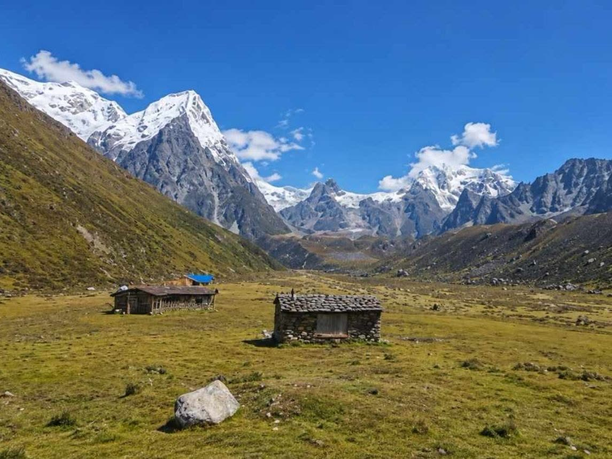
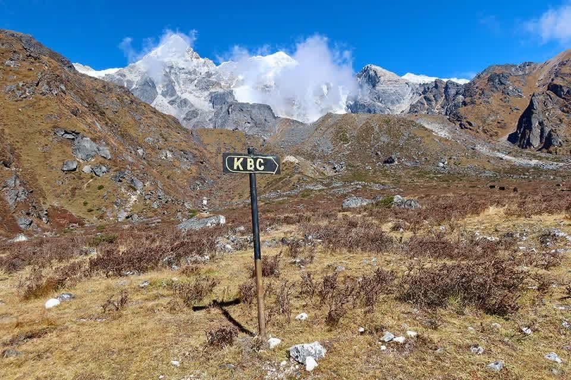
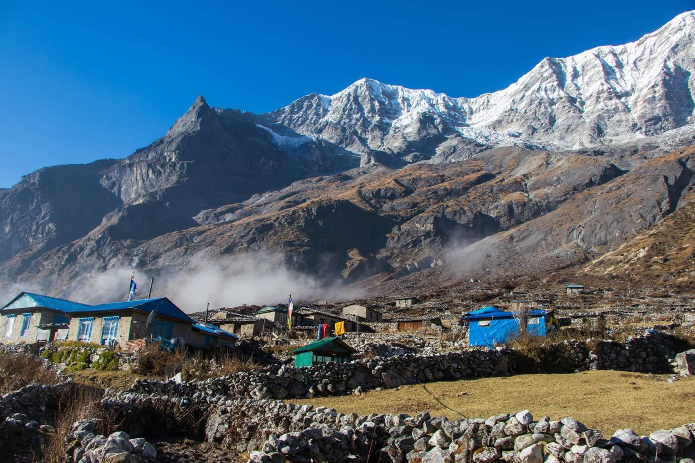
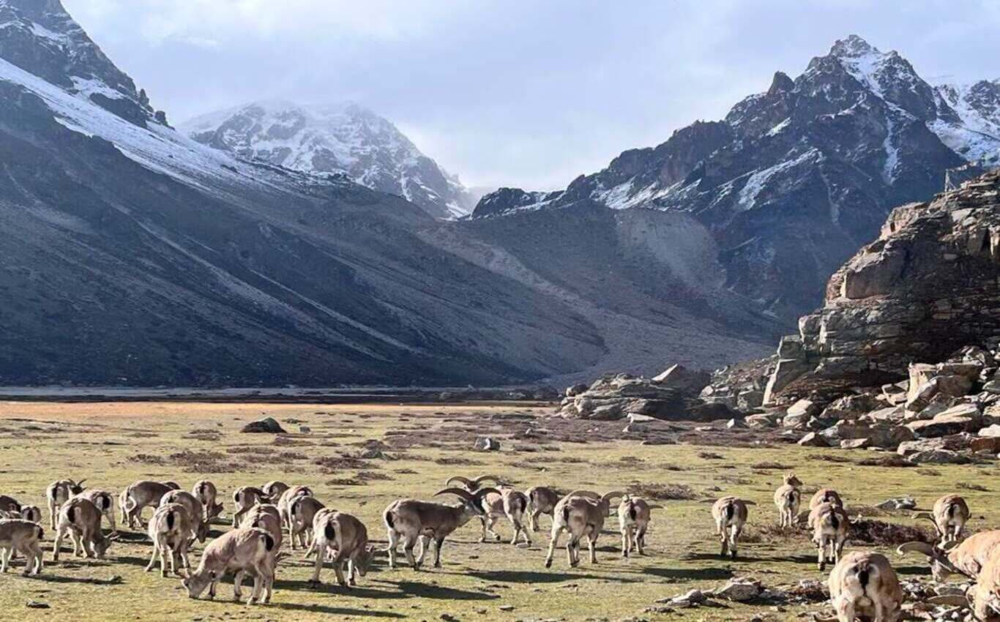

Kanchenjunga Trek - 24 Days
If you've been searching for a Himalayan adventure that still feels genuinely remote, the Kanchenjunga Trek deserves a top spot on your list. Tucked away in the far eastern corner of Nepal, this trek takes you to the foot of the world's third-highest mountain, Mount Kanchenjunga (8,586m), through a landscape that few trekkers ever get to see.





Key Trip Facts
Trek Overview
Trip Highlights
Kanchenjunga Trek Overview
If you've been searching for a Himalayan adventure that still feels genuinely remote, the Kanchenjunga Trek deserves a top spot on your list. Tucked away in the far eastern corner of Nepal, this trek takes you to the foot of the world's third-highest mountain, Mount Kanchenjunga (8,586m), through a landscape that few trekkers ever get to see. While routes like Everest Base Camp Trek and Annapurna Circuit Trek have become household names, Kanchenjunga Trekking remains one of the last true wilderness experiences in the Nepal Himalaya a place where you're far more likely to bump into a yak herder than another tourist.
This guide walks you through everything you need to know about the Kanchenjunga Base Camp Trek Nepal has to offer: the route, the difficulty, the permits, the best season to go, and why this off-the-beaten-path trek is quietly becoming one of the most sought-after adventures for serious trekkers.
Why Trek to Kanchenjunga?
Mount Kanchenjunga straddles the border between Nepal and India (Sikkim), and its name translates loosely to "Five Treasures of the Snow," referring to its five distinct peaks. The Kanchenjunga region trekking experience is defined by dramatic contrasts you'll walk through humid, subtropical forests at lower elevations, past terraced villages of the Limbu and Rai communities, and then climb steadily into alpine meadows and glacial valleys where the only sounds are wind and rockfall.
Because this is a remote trekking in Nepal route, trail infrastructure is simpler than what you'd find in the Everest Region Trekking or Annapurna regions. Teahouses exist, but they're basic, and some sections require Camping Trek. This is exactly what draws a certain kind of trekker: those chasing solitude, authentic culture, and views of a Himalayan giant that most people will never see up close.
Kanchenjunga North Base Camp and South Base Camp
Unlike Everest, which has one base camp, Mount Kanchenjunga Trek routes typically lead to two separate base camps:
- Kanchenjunga North Base Camp Trek: Ends near Pangpema (around 5,140m), offering close-up views of the mountain's north face along with Jannu (Kumbhakarna) Peak.
- Kanchenjunga South Base Camp Trek: Ends at Oktang (around 4,730m), where you'll see the dramatic south face and a wall of surrounding peaks.
Many trekkers choose to combine both, connecting them via the Mirgin La pass this extended route is often called the Kanchenjunga Circuit Trek, and it's the most complete way to experience the region.
Kanchenjunga Trek Itinerary and Duration
A standard Kanchenjunga Trek Itinerary runs between 18 and 22 days, depending on whether you visit one base camp or both, and how many acclimatization days you build in. A popular version is the Kanchenjunga Trek Itinerary 20 Days, which typically includes:
- Flight from Kathmandu to Bhadrapur, then a drive to Taplejung
- Trekking through lower Limbu villages like Mitlung, Chirwa, and Sekathum
- Gradual ascent through Ghunsa and Khambachen
- Exploring both North and South Base Camps via the Mirgin La connection
- Descent back through Yamphudin or the original route to Taplejung
- Return flight to Kathmandu
Kanchenjunga Trek Duration can be shortened to around 15–16 days if you visit only one base camp, or extended for those wanting extra rest and exploration days.
Kanchenjunga Trek Distance and Difficulty
The total Kanchenjunga Trek Distance typically ranges from 150 to 220 km, depending on the exact route and whether both base camps are included.
As for Kanchenjunga Trek Difficulty, this is considered a strenuous, high-altitude trek not recommended for first-time trekkers. Long trekking days, remote terrain, high passes above 4,500m, and limited rescue infrastructure all add to the challenge. So, how difficult is Kanchenjunga Base Camp Trek exactly? Expect 6–7 hours of walking most days, with a few longer stretches over rough trails and suspension bridges. Prior trekking experience at altitude, along with solid fitness preparation, is strongly advised.
Kanchenjunga Trek Permits and Restricted Area
Because it lies in a sensitive border zone, this is a Kanchenjunga restricted area trek, meaning you can't simply walk in with a standard TIMS card. You'll need:
- A Restricted Area Permit (RAP), valid for the Kanchenjunga region
- A Kanchenjunga Conservation Area entry permit
- To trek with a minimum of two people, accompanied by a licensed guide from a registered trekking agency (solo trekking isn't permitted here)
Understanding the Kanchenjunga Trek Permit requirements early is essential for planning, since permits must be arranged through a government-registered trekking company in Nepal.
Best Time for Kanchenjunga Trek
Timing your trek right makes a huge difference in this remote region. The Best Time for Kanchenjunga Trek falls into two main windows:
Spring (March–May)
Rhododendron forests bloom, temperatures are mild, and mountain views are generally clear.
Autumn (late September–November)
Considered the best time to trek Kanchenjunga overall, with stable weather, crisp visibility, and comfortable daytime temperatures.
Monsoon (June–August)
This season brings landslide risk and leech-heavy trails,
winter (December–February)
sees heavy snow blocking the high passes, making the route far more demanding.
Kanchenjunga Trek Cost
Kanchenjunga Trek Cost varies based on trip length, group size, and service level, but as a rough guide, most Kanchenjunga trekking package Nepal options range from around USD 1,800 to 3,500 per person for a 18–22 day itinerary, inclusive of permits, guide, porter, and teahouse or camping accommodation. If you're budgeting for Kanchenjunga Trek Cost 2026 and 2027, expect a modest rise from current rates due to permit fee adjustments and inflation in domestic flight and logistics costs it's worth confirming current pricing directly with a Nepal Unique Trek trekking operator before booking.
Planning a Kanchenjunga Trek from Kathmandu
Most itineraries begin as a Kanchenjunga Trek from Kathmandu, with a domestic flight to Bhadrapur followed by an overland drive to the trailhead in Taplejung. Because of the restricted-area rules, it's practical to book a Kanchenjunga Trek package through a licensed operator who can arrange permits, guides, and logistics as one package rather than piecing it together independently.
Looking Ahead: Kanchenjunga Base Camp Trek 2026 and 2027
Interest in Eastern Nepal Trek routes is steadily growing as trekkers look beyond the crowded classic trails. If you're eyeing a Kanchenjunga Base Camp Trek 2026 or already planning a Kanchenjunga Base Camp Trek 2027 departure, booking early is wise permit processing and peak-season teahouse availability can take time to arrange, especially for group departures in the popular autumn window.
In our Opinion
The Kanchenjunga Trek Nepal offers something increasingly rare in Himalayan trekking: genuine remoteness paired with jaw-dropping mountain scenery. It's not an easy trek, and it's not a cheap one, but for trekkers craving an authentic Himalayan trekking Nepal experience away from the crowds, few routes compare to standing beneath the massive walls of the world's third-highest peak. Whether you choose the North Base Camp, the South Base Camp, or the full Circuit connecting both, this is a Nepal trekking adventure that rewards preparation with an experience few others will ever have.
Kanchenjunga Trek - 24 Days Itinerary: Day by Day
24 Days program for Kanchenjunga Trek - 24 Days. Daily timings and sequences remain flexible according to weather, flight operations, and group pace.
Day 1: Arrival in Kathmandu – 1,300 m / 4,265 ft Altitude: 1,300 m / 4,265 ft Distance: Approximately 5–7 km by airport transfer Duration: 30–45 minutes
Approx. 1,400 m / 4,593 ft
Your unforgettable Kanchenjunga Trek in Nepal begins with your arrival at Tribhuvan International Airport in Kathmandu. A representative from Nepal Unique Treks will welcome you at the airport and transfer you to your hotel in the heart of Kathmandu. After checking in, you can relax and recover from your international journey.
Day 2: Trek Gear Preparation and Sightseeing in Kathmandu 1,400 m
Approx. 1,400 m / 4,593 ft
Day two combines cultural exploration with final preparation for your Kanchenjunga Trek. After breakfast, enjoy a guided sightseeing tour of some of Kathmandu Valley's important cultural and historical attractions. Depending on the sightseeing schedule, you may visit ancient temples, Buddhist stupas and UNESCO-listed heritage sites. The cultural experience provides useful background before entering the remote Himalayan communities of eastern Nepal. Later, return to the hotel and meet your trekking guide for a detailed briefing. Your guide will check your trekking equipment, clothing, documents and essential gear before the journey to eastern Nepal. This is also an ideal opportunity to purchase or rent any last-minute trekking equipment in Kathmandu. Since the Kanchenjunga region is remote and facilities become increasingly limited as you gain altitude, proper preparation is particularly important for a safe and enjoyable Kanchenjunga Base Camp Trek.
Day 3: Fly from Kathmandu to Suketar and Trek to Lalikharka – 2,265 m / 7,431 ft, Flight Elevation: Suketar approximately 2,420 m / 7,940 ft Trek Elevation: Lalikharka 2,265 m / 7,431 ft Distance: Approximately 8 km Trekking Duration: 3–4 hours
Approx. 2,265 m / 7,431 ft
Your Kanchenjunga Trek itinerary officially begins with a scenic flight from Kathmandu to Suketar, the gateway to the Kanchenjunga region. The flight provides an exciting introduction to eastern Nepal and the Himalayan landscapes. After arriving at Suketar, you begin walking toward Lalikharka. The trail passes through beautiful countryside, forested sections and traditional settlements, giving you your first experience of the quieter trails of the Kanchenjunga region. Lalikharka is located at a moderate altitude, making it a comfortable first trekking destination after the flight. The trail is not extremely demanding, but the combination of walking and transportation makes this a full adventure day. Enjoy the peaceful surroundings and prepare for the longer trekking days ahead. Overnight at a local lodge and experience the warm hospitality of the eastern Himalayan communities.
Day 4: Lalikharka to Khesewa – 2,120 m / 6,955 ft Altitude: 2,120 m / 6,955 ft Distance: Approximately 11–12 km Trekking Duration: 5–6 hours
Approx. 2,120 m / 6,955 ft
Today you continue deeper into the Kanchenjunga trekking route as the trail leads from Lalikharka toward Khesewa. The route follows a mixture of forest trails, rural paths and sections through traditional mountain settlements. You will notice the landscape changing gradually as the trail enters a more remote part of eastern Nepal. The walk includes both ascents and descents, providing an excellent introduction to the physical demands of the Kanchenjunga Trek. Along the way, you can observe terraced fields, traditional houses and the everyday lifestyle of local communities. The surrounding hills are covered with forests, and in spring the rhododendron vegetation can add beautiful colors to the landscape. Khesewa provides a peaceful overnight stop before the route continues toward Mamankhe and Yamphudin. This section of the Kanchenjunga Base Camp Trek is particularly rewarding for travelers looking for authentic villages and less-crowded Himalayan trails.
Day 5: Khesewa to Mamankhe – 1,785 m / 5,856 ft Altitude: 1,785 m / 5,856 ft Distance: Approximately 14 km Trekking Duration: 5–6 hours
Approx. 1,785 m / 5,856 ft
The fifth day of the Kanchenjunga Trek itinerary takes you through scenic hills and traditional villages toward Mamankhe. The trail continues through lush vegetation and terraced farmland, with several ascents and descents along the way. Compared with the higher sections of the trek, today's elevation remains relatively low, allowing you to enjoy the rich biodiversity of the Kanchenjunga Conservation Area. The region is home to diverse plants, birds and wildlife, while the forests provide shade during sections of the walk. You will also have opportunities to interact with local people and observe the culture of eastern Nepal. Mamankhe is a small settlement where you can enjoy a simple lodge stay and a peaceful Himalayan evening. Although today's altitude is lower than Khesewa, the distance makes it a worthwhile training day for the more demanding sections of the Kanchenjunga Base Camp Trek.
Day 6: Mamankhe to Yamphudin – 2,080 m / 6,824 ft Altitude: 2,080 m / 6,824 ft Distance: Approximately 16 km Trekking Duration: 6–7 hours
Approx. 2,080 m / 6,824 ft
Today you trek from Mamankhe to Yamphudin, one of the important settlements along the Kanchenjunga Trekking route. The trail follows remote mountain paths through forests, hillsides and traditional settlements. There are several uphill and downhill sections, so a steady pace is recommended. Yamphudin is an important stop before entering the more remote and higher-altitude areas of the Kanchenjunga region. The village is surrounded by dramatic hills and provides an opportunity to experience the lifestyle of communities living far from Nepal's major trekking centers. As you approach Yamphudin, you will begin to feel the increasingly wild character of the trek. Your guide will also help you prepare for the gradual altitude gain in the coming days. After reaching the village, enjoy a warm meal and rest at the lodge. This day represents an important transition from the lower hills toward the alpine landscapes of the Kanchenjunga Base Camp Trek.
Day 7: Yamphudin to Tortong – 2,995 m / 9,826 ft Altitude: 2,995 m / 9,826 ft Distance: Approximately 15 km Trekking Duration: 6–7 hours
Approx. 2,995 m / 9,826 ft
The trail becomes increasingly mountainous as you leave Yamphudin and trek toward Tortong. Today's Kanchenjunga Trek route gradually gains elevation while passing through dense forests and increasingly remote terrain. You will cross mountain streams and walk along trails surrounded by rhododendron, oak and other Himalayan vegetation. The landscape becomes quieter as settlements become less frequent. Tortong is located close to the entrance of the higher Kanchenjunga valleys and is an important overnight stop before reaching Cheram. The gradual elevation gain is also useful for acclimatization because the body is given time to adjust before the trek moves above 3,500 meters. Keep your walking pace comfortable and stay hydrated throughout the day. The combination of forest, mountain streams and rugged hills makes this one of the most scenic lower-altitude sections of the Kanchenjunga Base Camp Trek itinerary.
Day 8: Tortong to Cheram – 3,870 m / 12,697 ft Altitude: 3,870 m / 12,697 ft Distance: Approximately 10 km Trekking Duration: 5–6 hours
Approx. 3,870 m / 12,697 ft
Today is an important altitude-gain day on your Kanchenjunga Base Camp Trek as you trek from Tortong to Cheram. The trail climbs steadily through beautiful forests before opening into more alpine surroundings. As you gain elevation, vegetation becomes shorter and the mountains begin to dominate the landscape. Cheram, also known as Tseram in some trekking references, is one of the major settlements on the southern side of the Kanchenjunga region. The village sits beneath impressive Himalayan peaks and provides a strategic location for acclimatization and exploration. Today's walking distance is moderate, but the significant elevation gain means you should maintain a slow and comfortable pace. Once you arrive at Cheram, take time to rest and enjoy the mountain environment. Your guide will monitor your condition as you prepare for the higher sections toward Ramche and Yalung Base Camp.
Day 9: Acclimatization and Rest Day at Cheram – 3,870 m / 12,697 ft Altitude: 3,870 m / 12,697 ft Distance: Approximately 3–6 km optional hiking Duration: 2–4 hours optional exploration
Approx. 3,870 m / 12,697 ft
This is an important Kanchenjunga Trek acclimatization day at Cheram. Rather than simply remaining inside the lodge all day, a short acclimatization hike is recommended so your body can adjust to the increasing altitude. Your guide will choose a suitable viewpoint or nearby trail according to weather and your physical condition. Walking higher and returning to Cheram helps prepare your body for the elevation above 4,000 meters. You can also use this day to explore the surrounding Himalayan landscape, take photographs and enjoy spectacular views of the peaks. Rest, hydration and nutrition are especially important at this stage of the Kanchenjunga Base Camp Trek. Because the following days involve higher elevations and demanding terrain, the acclimatization day significantly improves the comfort and safety of the overall journey. Enjoy the peaceful environment of Cheram before continuing toward Ramche and the Yalung Glacier.
Day 10: Cheram to Ramche – 4,580 m / 15,026 ft Altitude: 4,580 m / 15,026 ft Distance: Approximately 8–9 km Trekking Duration: 5–6 hours
Approx. 4,580 m / 15,026 ft
Today's trek from Cheram to Ramche takes you into the high-altitude landscape of the Kanchenjunga South Base Camp Trek route. The trail gradually leaves the forest behind and enters a more open alpine environment. As you climb toward 4,580 meters, the air becomes thinner and the surrounding mountains appear increasingly dramatic. The route follows high valleys and rocky terrain toward Ramche, an important stopping point for exploring the Yalung Glacier and South Base Camp area. Because of the altitude, today's distance is intentionally shorter than some of the lower sections. Walking slowly and taking regular breaks is essential. Ramche offers extraordinary mountain scenery, and on clear days you can see impressive Himalayan peaks and glacial landscapes. After reaching the lodge, enjoy a warm meal and rest well. This high-altitude stage is one of the highlights of the Kanchenjunga Trek itinerary.
Day 11: Ramche to Yalung Base Camp and Return to Cheram – Approx. 3,870 m / 12,697 ft Maximum Altitude: Approximately 4,500–4,700 m / 14,764–15,420 ft Distance: Approximately 14–16 km round trip Trekking Duration: 7–9 hours
Approx. 3,870 m / 12,697 ft
Today is one of the most spectacular days of the Kanchenjunga Base Camp Trek. From Ramche, you trek toward the Yalung Base Camp area, following the dramatic Yalung Glacier valley. The trail passes through a rugged alpine landscape surrounded by towering Himalayan peaks. Depending on trail conditions, weather and your group's physical condition, the exact turnaround point may vary. The Yalung Valley offers impressive views toward the southern face of Kanchenjunga and neighboring peaks. Because this is a high-altitude day, your guide will carefully monitor the pace and weather conditions. After spending time enjoying the views and taking photographs, you retrace your route toward Cheram for the overnight stay. Returning to a lower elevation provides an important recovery period. This demanding but rewarding day gives you a close experience of the remote Kanchenjunga South Base Camp region before crossing toward the northern side.
Day 12: Cheram to Sele La – 4,290 m / 14,075 ft Altitude: Sele La approximately 4,290 m / 14,075 ft Distance: Approximately 10–12 km Trekking Duration: 6–7 hours
Approx. 4,290 m / 14,075 ft
Today you begin one of the most adventurous sections of the Kanchenjunga Circuit Trek as the trail climbs from Cheram toward Sele La. The route crosses high mountain terrain with steep sections and potentially challenging weather conditions. Sele La is part of the high-pass system connecting the southern and northern sides of the Kanchenjunga region. Depending on conditions, the trail may include snow, rocky sections and exposed mountain paths. From higher points, you can enjoy panoramic views of numerous Himalayan peaks. The pass crossing is physically demanding because of the elevation, so maintaining a slow and steady pace is important. Your guide will select the safest route according to weather and trail conditions. Reaching Sele La is a significant achievement on the Kanchenjunga Trek itinerary, and the remote landscape provides an authentic high-Himalayan adventure far away from crowded trekking routes.
Day 13: Sele La to Ghunsa – 3,595 m / 11,794 ft Altitude: Ghunsa 3,595 m / 11,794 ft Distance: Approximately 12–14 km Trekking Duration: 6–8 hours
Approx. 3,595 m / 11,795 ft
After crossing the high mountain terrain around Sele La, today's trail descends toward Ghunsa, one of the most beautiful villages on the Kanchenjunga Trekking route. The descent provides welcome relief after the demanding pass crossing, although some sections can remain steep and rocky. As you lose altitude, vegetation gradually returns and the landscape becomes greener. Ghunsa is a traditional mountain settlement with Tibetan cultural influences and is one of the most important villages in the northern Kanchenjunga region. The village is surrounded by spectacular peaks and provides a comfortable place to recover after the high-pass section. Take time to relax, enjoy the local environment and prepare for the next stage toward Kambachen. The journey from Sele La to Ghunsa is an important link between the southern and northern sections of the Kanchenjunga Circuit Trek, making this one of the most memorable days of the entire adventure.
Day 14: Ghunsa to Kambachen – 4,050 m / 13,287 ft Altitude: Kambachen 4,050 m / 13,287 ft Distance: Approximately 10–11 km Trekking Duration: 5–6 hours
Approx. 4,050 m / 13,287 ft
The trail from Ghunsa to Kambachen takes you deeper into the remote northern section of the Kanchenjunga Base Camp Trek. The route follows the Ghunsa River through a dramatic Himalayan valley, passing forests, rocky slopes and sections of exposed mountain terrain. As you climb above 4,000 meters, the surrounding landscape becomes increasingly alpine and rugged. Kambachen is a small high-altitude settlement surrounded by enormous Himalayan peaks, making it an unforgettable overnight location. The trail can include landslide-prone and rocky sections, so careful footing and following your guide's instructions are important. As the altitude increases, you should maintain a slow pace and drink plenty of water. Reaching Kambachen marks another major milestone because you are now approaching Lhonak and Pangpema, the highest and most spectacular parts of the Kanchenjunga Trek itinerary.
Day 15: Kambachen to Lhonak – 4,780 m / 15,682 ft Altitude: Lhonak 4,780 m / 15,682 ft Distance: Approximately 10–11 km Trekking Duration: 5–7 hours
Approx. 4,780 m / 15,682 ft
Today the Kanchenjunga Trek enters its dramatic high-altitude wilderness as you trek from Kambachen to Lhonak. The trail follows the Kanchenjunga Glacier valley through rugged terrain, rocky moraines and high mountain landscapes. Vegetation becomes very sparse at this elevation, while towering peaks surround the trail. The journey is physically demanding because Lhonak is located at approximately 4,780 meters, so walking slowly is essential. Along the way, you may see impressive views of the Kanchenjunga massif and surrounding peaks, depending on weather conditions. Lhonak is a remote settlement with very basic facilities, reflecting the true wilderness character of the Kanchenjunga Base Camp Trek Nepal. After reaching Lhonak, take time to rest and prepare for the following day's journey to Pangpema. Good hydration, proper nutrition and careful monitoring of altitude symptoms are especially important at this stage.
Day 16: Lhonak to Pangpema – Kanchenjunga North Base Camp – 5,143 m / 16,873 ft Altitude: Pangpema 5,143 m / 16,873 ft Distance: Approximately 12–14 km round trip depending on overnight arrangement Trekking Duration: 7–9 hours
Approx. 5,143 m / 16,873 ft
Today is the ultimate highlight of the Kanchenjunga Base Camp Trek as you trek toward Pangpema, the North Base Camp of Kanchenjunga at approximately 5,143 meters. The trail follows a remote glacial valley surrounded by massive Himalayan peaks. As you approach Pangpema, the views become increasingly spectacular, with the enormous Kanchenjunga massif dominating the horizon. The route crosses rocky moraine and high-altitude terrain, requiring careful walking and a steady pace. Reaching Pangpema provides an unforgettable sense of achievement as you stand beneath one of the world's highest mountains. Take time to enjoy the panoramic mountain scenery and capture photographs before settling into the high-altitude camp. Weather conditions can change rapidly at this elevation, so follow your guide's instructions carefully. Spending the night around Pangpema makes this the highest and most adventurous stage of your Kanchenjunga Trek itinerary.
Day 17: Pangpema to Lhonak – 4,780 m / 15,682 ft Altitude: Lhonak 4,780 m / 15,682 ft Distance: Approximately 12–14 km Trekking Duration: 5–7 hours Accommodation: Lodge/Camp
Approx. 4,780 m / 15,682 ft
After experiencing the spectacular Kanchenjunga North Base Camp at Pangpema, you begin your return journey toward Lhonak. The trail follows the same remote glacial valley, but the landscape can look completely different as the light changes across the mountains. Today's route involves gradual descent, which generally makes the walk more comfortable after spending time above 5,000 meters. You will again pass through rocky moraine and high-altitude terrain with extraordinary views of Kanchenjunga and neighboring peaks. Although the distance is manageable, the elevation means you should continue walking at a comfortable pace. Returning to Lhonak gives your body a chance to recover before the longer descent toward Ghunsa. This part of the Kanchenjunga North Base Camp Trek is particularly memorable because you can look back toward the mountains and appreciate the remote wilderness you have just explored.
Day 18: Lhonak to Ghunsa – Approximately 3,595 m / 11,794 ft Altitude: Ghunsa approximately 3,595 m / 11,794 ft Distance: Approximately 17–18 km Trekking Duration: 7–8 hours
Approx. 3,475 m / 11,401 ft
Today you make a significant descent from Lhonak to Ghunsa, retracing the beautiful northern section of the Kanchenjunga Trekking route. The trail follows the mountain valley through rocky terrain before gradually entering areas with more vegetation. As you lose altitude, breathing becomes easier and the landscape begins to feel greener and warmer. The long descent requires endurance, particularly because the trail includes uneven rocky sections and river crossings. Ghunsa provides a welcome return to a more comfortable altitude and a larger mountain settlement. After reaching the village, you can enjoy a warm meal and relax after the long trekking day. This section also provides another opportunity to appreciate the dramatic contrast between the high glacial environment around Lhonak and the forested landscapes lower down. Overnight at Ghunsa and prepare for the continued descent through the remote villages of the Kanchenjunga region.
Day 19: Ghunsa to Amjilosa – 2,308 m / 7,572 ft Altitude: Amjilosa 2,308 m / 7,572 ft Distance: Approximately 16–18 km Trekking Duration: 6–8 hours
Approx. 2,308 m / 7,572 ft
The journey continues downhill from Ghunsa toward Amjilosa as you leave the high alpine environment behind. Today's Kanchenjunga Trek itinerary follows the river valley through forests, suspension bridges and rugged mountain paths. The gradual loss of altitude brings back thicker vegetation and warmer temperatures. Along the route, you may encounter local people, mule trains and porters transporting supplies to remote villages. The trail can be steep in places, making trekking poles useful for maintaining balance during the descent. Amjilosa is a small mountain settlement surrounded by lush hills and forest. After several days in the high mountains, the village offers a pleasant change of scenery and a chance to enjoy traditional local hospitality. Although today's elevation is much lower than Lhonak and Pangpema, the distance can make this a physically demanding day. Rest well before continuing toward Chirwa.
Day 20: Amjilosa to Chirwa – 1,270 m / 4,167 ft Altitude: Chirwa 1,270 m / 4,167 ft Distance: Approximately 15–17 km Trekking Duration: 6–7 hours
Approx. 1,270 m / 4,167 ft
Today's trail descends further toward Chirwa, bringing you back into the lower valleys of eastern Nepal. The dramatic difference in altitude becomes obvious as dense vegetation, warmer temperatures and cultivated land gradually replace the rocky alpine environment. The Kanchenjunga Trek route follows sections of the Ghunsa River and crosses suspension bridges along the way. The trail includes a combination of gradual walking, steep descents and forested sections. Chirwa is an important settlement on the approach and return route to the Kanchenjunga region and provides a comfortable overnight stop. This part of the journey gives you another opportunity to experience the diverse landscapes protected within and around the Kanchenjunga Conservation Area. After reaching Chirwa, enjoy a relaxing evening at the lodge and reflect on the extraordinary journey from the high-altitude Kanchenjunga North Base Camp to the lower Himalayan valleys.
Day 21: Chirwa to Phurumbu – 1,549 m / 5,082 ft Altitude: Phurumbu approximately 1,549 m / 5,082 ft Distance: Approximately 12–14 km Trekking Duration: 5–6 hours
Approx. 1,549 m / 5,082 ft
Your Kanchenjunga Base Camp Trek is gradually coming to an end as you trek from Chirwa toward Phurumbu. The trail passes through lower mountain landscapes, forests and rural settlements. After spending many days surrounded by high Himalayan peaks, today's landscape feels noticeably warmer and greener. The route follows traditional walking trails and provides another glimpse into the everyday life of eastern Nepal. Although the altitude is relatively low, the trail can still include several uphill and downhill sections, so a relaxed pace is recommended. Phurumbu is a convenient final overnight stop before reaching Suketar. This stage allows you to gradually transition from the remote trekking environment back toward the road and airport facilities of Taplejung. Enjoy the final evening in the mountain region, share memories with your trekking team and prepare for the final walking and flight stages of your Kanchenjunga Trek in Nepal.
Day 22: Phurumbu to Suketar – Approximately 2,420 m / 7,940 ft Altitude: Suketar approximately 2,420 m / 7,940 ft Distance: Approximately 10–12 km Trekking Duration: 4–5 hours
Approx. 2,420 m / 7,940 ft
Today you complete the final trekking section of the Kanchenjunga Trek itinerary, walking from Phurumbu to Suketar. The route climbs gradually toward the Suketar area, where the terrain becomes more developed compared with the remote trails you have experienced during the trek. Reaching Suketar marks the successful completion of your long journey through the Kanchenjunga region. Take time to relax and enjoy a well-deserved meal after completing the trekking portion. Suketar is the gateway for flights connecting the Kanchenjunga region with Kathmandu, although flight schedules can be affected by weather. Your guide will confirm the next day's transportation arrangements and assist with any necessary preparations. This is also an ideal evening to say farewell to your trekking staff and reflect on the unforgettable landscapes, villages, glaciers and mountain views experienced during the Kanchenjunga Base Camp Trek.
Day 23: Fly from Suketar to Kathmandu – 1,300 m, Altitude: Kathmandu approximately 1,300 m / 4,265 ft Flight Duration: Approximately 45–60 minutes, subject to flight operations Distance: Approximately 250 km by air
Approx. 1,400 m / 4,593 ft
Today you leave the Kanchenjunga region and fly from Suketar back toward Kathmandu. The flight provides a final opportunity to appreciate the hills and mountains of eastern Nepal from above. Flight schedules in mountainous Nepal are highly dependent on weather conditions, so some flexibility may be necessary. Once you arrive in Kathmandu, transfer to your hotel and enjoy time to relax after the demanding Kanchenjunga Trek. Y ou may spend the afternoon exploring Thamel, purchasing souvenirs or simply resting at your hotel. In the evening, Nepal Unique Treks can organize a farewell dinner where you can celebrate the successful completion of your Kanchenjunga Base Camp Trek with your guide and trekking team. This final evening is a wonderful opportunity to share stories and photographs from the journey before your international departure.
Day 24: Final Departure from Kathmandu Altitude: Kathmandu 1,400 m
Approx. 1,400 m / 4,593 ft
Your 24-day Kanchenjunga Trek in Nepal comes to an end today. After breakfast, depending on your international flight schedule, a representative from Nepal Unique Treks will arrange your transfer to Tribhuvan International Airport. As you leave Nepal, you will carry unforgettable memories of the remote Kanchenjunga region, traditional mountain villages, high-altitude valleys, glaciers and spectacular views of the world's third-highest mountain. The journey from the lower hills to Pangpema at 5,143 meters has provided an authentic off-the-beaten-path Himalayan experience far from the crowds of Nepal's more popular trekking destinations. If you have additional time in Nepal, the itinerary can also be extended with cultural tours, wildlife experiences or other trekking adventures. We hope your Kanchenjunga Base Camp Trek itinerary has provided an unforgettable combination of Himalayan adventure, local culture, wilderness and mountain scenery.
What is Included (Regular Package)
What is Excluded
Booking Dates & Availability
Packing List for Kanchenjunga Trek - 24 Days
Tents, kitchen equipment, dining crew, and porters are handled by our logistics team on restricted/remote camping routes.Expedition Duffel & Trail Hardware (5 items)
Severe Weather Apparel (4 items)
Camping Comfort & Power (3 items)
Read before you book: Kanchenjunga Trek - 24 Days
Practical logistics derived directly from this package's route facts, inclusions, and elevation profile.
Accommodation & Meals (Hotel, Lodge & Tea House)
Accommodation follows the package grade (Hotel, Lodge & Tea House) in Kathmandu and along the Off The Beaten Trails route. Check your package Includes section for included meals and Kathmandu hotel nights.
Permits & Local Logistics
Transportation is arranged via Flight & Private Car. Applicable permits listed in the package inclusions are arranged by Nepal Unique Treks prior to departure.
Route Difficulty & Elevation (5143m)
Kanchenjunga Trek - 24 Days is rated Adventurous with a maximum elevation of 5143m. Follow your guide's pacing and stay hydrated throughout the 24 Days itinerary.
Best Time to Visit (Spring & Autumn)
Recommended operating season on the source page: Spring & Autumn.
Altitude Profile of Kanchenjunga Trek - 24 Days
Weather on Kanchenjunga Trek - 24 Days
Kanchenjunga Trek - 24 Days Route & Area Overview
Book This Trek
Contact our Kathmandu coordinators using the booking panel for private or fixed-group departures.
Trip Feedback
Explore verified traveller stories or leave feedback on Nepal Unique Treks.
Visit Nepal Unique Treks